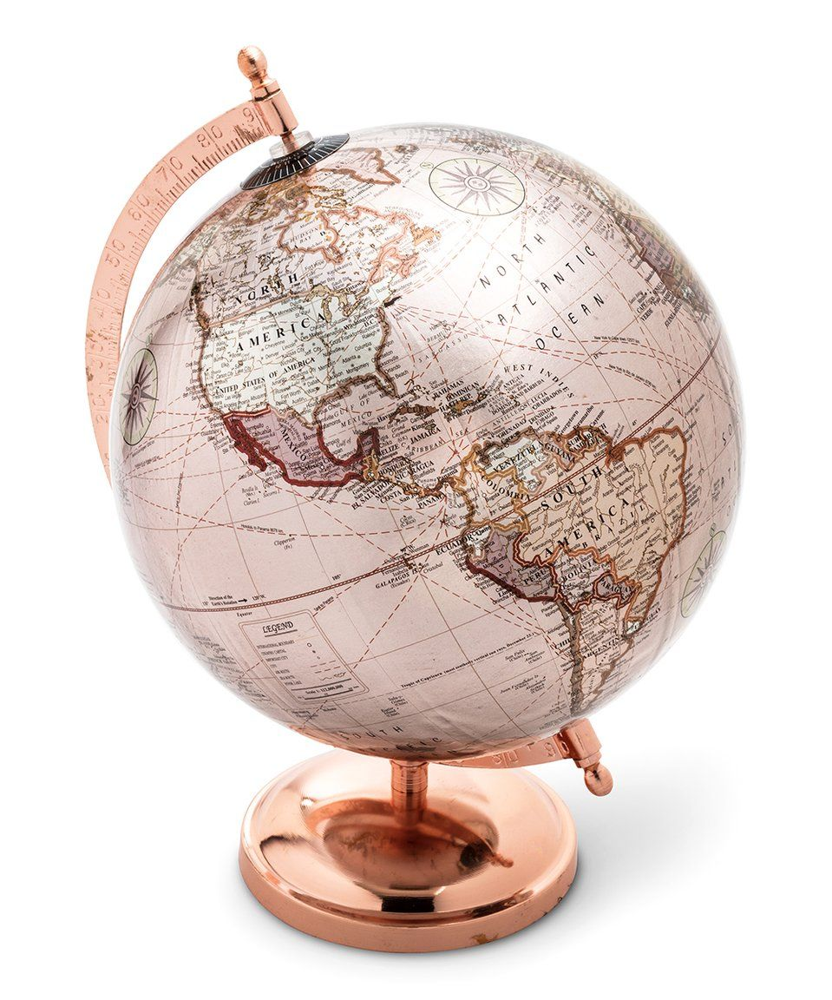

Growing up I moved around quite a bit.
I was born in Taiwan and spend my childhood travelling between Taiwan, the U.S., & Canada.
My family and I lived in Sammamish, Washington when I was 1 to 5 years old.
I went back and forth between Taiwan and the United States during that time.
Moving from place to place has always been a bittersweet experience to me...
